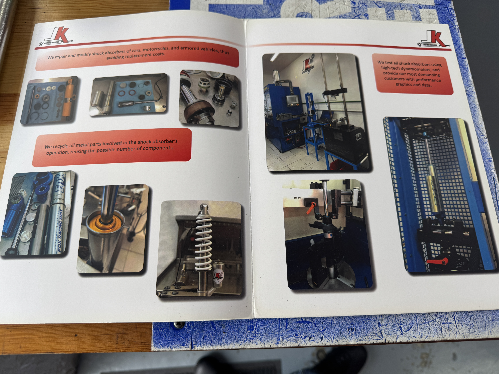

♻️ NUESTRO LEMA
"—Help! —Save The Earth By Letting Us Recycle Your Old Parts"
La Tierra pide ayuda cuando tiramos a la basura piezas de acero y aluminio de alta precisión que solo tenían desgastados sus sellos o su aceite. En JK Amortiguadores reciclamos todas las partes metálicas involucradas en la operación del amortiguador, reutilizando el cuerpo original y sustituyendo los internos por refacciones italianas nuevas.
✓ Ahorro real frente a reemplazo
Conservas tu amortiguador original de fábrica (muchas veces de mejor calidad que un reemplazo genérico nuevo) a una fracción del costo.
✓ La única condición mecánica
Que el tubo exterior y la flecha cromada (vástago) no tengan golpes, rayaduras profundas ni estén doblados.

